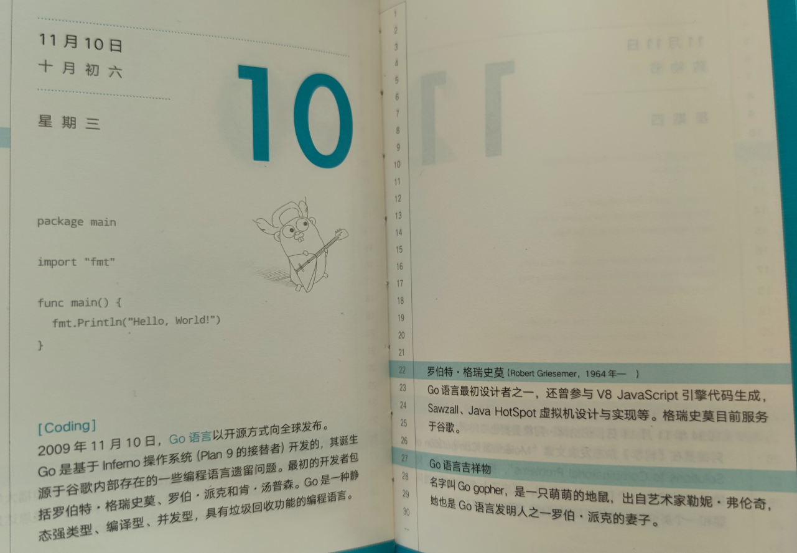
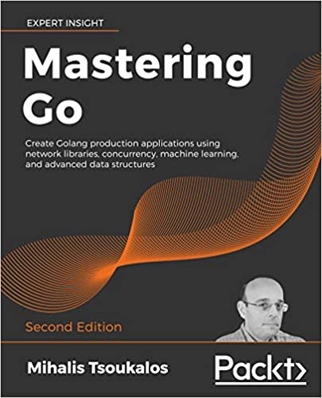

祝贺 Go 开源 11 周年

题图来自《了不起的程序员》
今天是 Go 语言开源 11 周年。有些人可能不太知道，简单回顾下 Go 的历史。
2007 年 Rob Pike, Robert Griesemer 和 Ken Thompson 一起创建了 Go 语言。从代码提交记录看，2008 年 3 月 3 日有了 Go 最初的规范 。
- 2009 年 11 月 10 日，Go 语言以开放源代码的方式向全球发布，当年获得了 TIOBE 年度编程语言称号；
- 2011 年 3 月 16 日，Go 语言的第一个稳定版本 r56 发布；
- 2012 年 3 月 28 日，Go 语言的第一个正式版本 Go1 发布，并承诺 1.x 的 兼容性；
- 直到 2013 年 5 月 13 日，Go1.1 正式版才发布，距离 1.0 过去了一年多。正式因为经历了这么久，Go 官方团队正式考虑发布周期的问题，并整理成文档：https://github.com/golang/go/wiki/Go-Release-Cycle ；总的目标是 6 个月发布一个版本，细分为 3 个月的常规开发，然后是 3 个月的测试和优化，即所谓的版本冻结。通过发行小版本来纠正诸如崩溃或安全性等关键问题。同时明确发布周期定于每年的 2 月 1 日和 8 月 1 日；
- 2013 年 12 月 1 日，Go1.2 正式发布；
- 2014 年 6 月 18 日，Go1.3 正式发布；
- 2014 年 12 月 10 日，Go1.4 正式发布；
- 2015 年 8 月 19 日，Go1.5 正式发布。该版本实现了自举，即移除了 C 代码，使用 Go 开发 Go 语言；开始按发布节奏走了（该版本故意推迟 2 个月发布）；
- 2016 年 2 月 17 日，Go1.6 正式发布；
- 2016 年 8 月 15 日，Go1.7 正式发布；引入 context 包；
- 2017 年 2 月 17 日，Go1.8 正式发布；
- 2017 年 8 月 24 日，Go1.9 正式发布；引入别名；
- 2018 年 2 月 16 日，Go1.10 正式发布；
- 2018 年 8 月 25 日，Go1.11 正式发布。开始支持 Module；
- 2019 年 3 月 1 日，Go1.12 正式发布；
- 2019 年 9 月 3 日，Go1.13 正式发布；
- 2020 年 2 月 25 日，Go1.14 正式发布；goroutine 支持异步抢占调度；
- 2020 年 8 月 11 日，Go1.15 正式发布；
关于以上版本的一些关键改动，可以查看 《你必须了解的 Go 历史：帮助理解 Go 的设计思想和每个版本的优势或弱点》 。
今天是 11 月 10 日，11 年前的今天，Go 语言开源了。在此祝愿 Go 语言越来越好！
Go 语言这两年出版了不少图书，这里分享几本 Go 语言英文图书。
01《Mastering Go 2nd Edition》
使用网络库，并发，机器学习和高级数据结构创建 Golang 生产级应用程序。这本书试用于已经了解语言基础知识并希望成为专家级 Go 实践者的 Go 程序员。

该书目录：
- Go 和操作系统
- 了解 Go 内部
- 使用基本 Go 数据类型
- 复合类型的用途
- 如何使用数据结构增强 Go 代码
- 你可能不了解的 Go 包和功能
- 反射和接口
- 告诉 Unix 系统该怎么做
- Go 中的并发性：Goroutines，通道和管道
- Go 中的并发：高级主题
- 代码测试，优化和分析
- Go中网络编程的基础
- 网络编程：构建自己的服务器和客户端
- Go 中的机器学习
02《Hands-On System Programming with Go》
使用 Golang 为 Unix 和 Linux 系统构建现代和并发应用程序。探索系统编程的基础知识，从内核 API 和文件系统开始，再到网络编程和过程通信。
该书目录：
- 系统编程简介
- Unix OS 组件
- Go 概述
- 使用文件系统
- 处理流
- 构建伪终端
- 处理进程和守护程序
- 退出代码，信号和管道
- 网络编程
- 使用 Go 进行数据编码
- 处理 Channel 和 Goroutines
- 使用 sync 和 atomic 进行同步
- 使用 Context 进行协调
- 实现并发模式
- 使用反射
- 使用 CGO
03《Hands-On High Performance with Go》
通过弹性大规模扩展和优化 Golang 应用程序的性能。成熟的方法和并发技术将帮助您使用 Go 编程编写更快更好的代码。
该书目录：
- Go 性能介绍
- 数据结构与算法
- 了解并发
- Go 中的 STL 算法等效项
- Go 中的矩阵和向量计算
- 编写可读的 Go 代码
- Go 中的模板编程
- Go 中的内存管理
- Go 中的 GPU 并行化
- Go 中的编译时间评估
- 构建和部署 Go 代码
- Profiling Go 代码
- Tracing Go 代码
- 集群和作业队列
- 跨版本比较代码质量